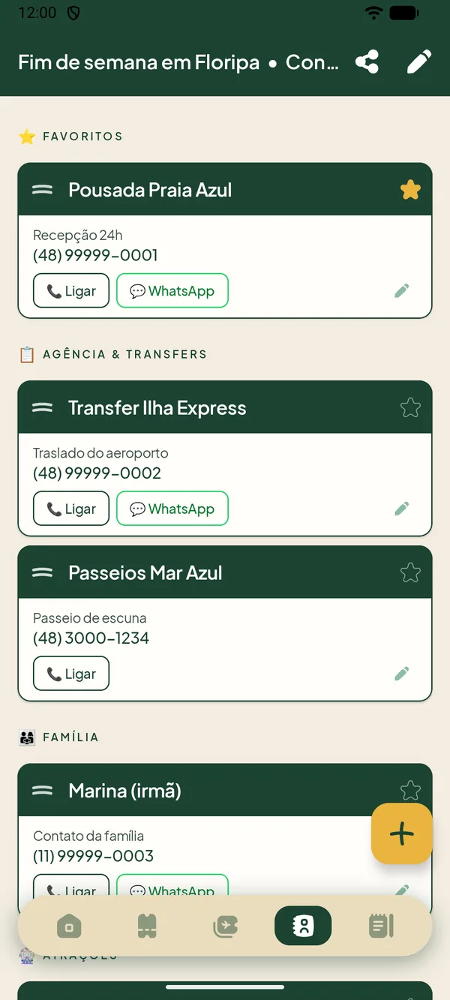

Do primeiro roteiro ao compartilhamento com quem vai junto. Cada passo leva menos de um minuto.
1Criar uma viagem
Na tela Minhas viagens, toque no botão + (ou abra o menu ☰) e escolha Nova viagem. São quatro passos:
Nova viagem: escolha o destino (o app sugere cidades enquanto você digita), dê um nome à viagem e escolha uma capa.
Datas da viagem: toque no dia da ida e depois no da volta. O Pipa cria um dia para cada data.
Hospedagem: informe nome, endereço e telefone de onde vai ficar. É opcional, mas ajuda a abrir o Maps e chamar um Uber.
Roteiro com IA: opcional. Veja a próxima seção, ou toque em Pular e acessar a viagem.
Dica: você pode pular o passo da IA e montar o roteiro manualmente, direto na tela de cada dia.
Criando uma viagem
2Montar o roteiro
No último passo da criação você escolhe como quer montar o roteiro. Toque no ícone de ajuda (?) para ver as duas opções dentro do app. Se preferir, toque em Pular e acessar a viagem e monte tudo manualmente depois.
Usando o chat com IA
Ideal se você ainda não tem um plano. A IA do app já conhece destino, datas e hospedagem. Conte o perfil da viagem (família, casal, amigos…) e o que prefere fazer, e ela monta um roteiro personalizado.
Toque em Chat com IA. O assistente abre a conversa já sabendo o destino, as datas e a hospedagem.
Conte o perfil da viagem e o que vocês gostam de fazer. O assistente responde e pode fazer mais perguntas.
Quando quiser, toque em Gerar roteiro agora e aguarde alguns segundos.
Confira o Roteiro gerado, dia a dia, e toque em Salvar roteiro. Se algo não agradar, use Voltar ao chat para ajustar.
Atenção: no chat, o que você digita é enviado ao Google Gemini para gerar o roteiro. Não escreva dados sensíveis (saúde, documentos, senhas).
Roteiro com o chat de IA
Importando um roteiro de outra IA
Ideal se você já tem um roteiro, de um blog, de um vídeo ou de uma conversa com outra IA, como o ChatGPT ou o Gemini. O Pipa gera uma instrução, a IA organiza o roteiro no formato certo e você cola o resultado no app.
Toque em Importar roteiro.
Abra o ChatGPT, o Gemini ou outra IA e peça o roteiro que você quer, contando o destino e o seu perfil de viagem.
Volte ao Pipa e toque em Copiar texto de instrução. O botão confirma com Texto copiado!.
Cole esse texto na mesma conversa da IA e envie. Ela devolve o roteiro no formato que o app entende.
Copie a resposta da IA, volte ao Pipa, toque no campo Cole aqui a resposta da IA e escolha Colar.
Toque em Importar roteiro, confira o Roteiro gerado e toque em Salvar roteiro.
Cole exatamente como veio. Qualquer alteração na resposta da IA pode causar erro na importação. Se isso acontecer, peça à IA para repetir a resposta no mesmo formato.
Dica: o texto de instrução é longo. Se a IA responder em partes ou acrescentar comentários, peça: “responda só com o JSON, sem texto fora dele”.
Importando um roteiro do ChatGPT
3Dias, atividades e clima
Ao abrir a viagem, você vê um cartão por dia, com a data, o título e a previsão do tempo. Toque em um dia para ver o roteiro completo.
Toque em + para adicionar uma atividade: escolha o horário, o ícone, o nome, a descrição, as tags e, se quiser, o endereço.
Toque em uma atividade para abri-la. Com o endereço preenchido, aparecem os atalhos para abrir no Maps e chamar um Uber.
No cartão da hospedagem, na tela inicial da viagem, estão os atalhos Maps, Uber e Ligar. O Ligar só abre o discador com o número, e a chamada só acontece quando você confirma.
A previsão do tempo aparece em cada dia, com uma ilustração para cada condição. Use o botão de atualizar, no cartão do clima, para buscar de novo.
Em Editar dia (lápis do dia), toque em Importar documento para anexar um PDF ou imagem àquele dia. Depois, é só tocar no cartão do documento para abri-lo.
Na tela inicial, o lápis no topo edita a viagem (destino, nome, capa e hospedagem) e o ícone de compartilhar envia a viagem a outra pessoa.
Dica: o endereço de cada atividade é opcional, mas é ele que liga os atalhos de Maps e Uber. Quanto mais completo, melhor o resultado.
Dias, atividades e clima
4Vouchers
Na aba Vouchers ficam reservas, ingressos e comprovantes, em PDF, imagem ou link.
Toque em +, dê um nome ao voucher e escolha a categoria e para quem ele é. Se quiser, escolha também o dia da viagem.
Em Arquivo ou link, anexe o arquivo ou cole o link.
Toque no ícone de agrupar, no topo da tela, para ver por categoria, por pessoa ou por dia da viagem.
Toque no círculo do cartão para marcar como “Usado” depois de utilizar.
Para reordenar, mantenha o dedo pressionado no ícone de duas linhas, à direita do cartão, e arraste dentro do mesmo grupo.
Em Nova categoria, crie categorias personalizadas se as padrão não servirem.
Vouchers
5Passagens e embarque
A aba Embarque guarda as passagens de qualquer tipo de transporte: avião, trem, ônibus ou navio.
Toque em + e escolha o tipo de transporte: avião, trem, ônibus, navio ou outro.
Preencha origem, destino, número, data e horário, informe o passageiro e anexe o arquivo ou o link.
O cartão é exibido no estilo bilhete, com um botão Abrir por passageiro. Quem viaja no mesmo voo aparece no mesmo cartão.
Dica: nos voos, o portão de embarque é editável. Confirme no app da companhia ou no painel do terminal no dia do embarque e anote aqui.
Passagens e embarque
6Contatos
Reúna hotel, guias, motoristas e outros telefones úteis na aba Contatos, agrupados por categoria.
Toque na estrela para favoritar: os favoritos sobem para o topo.
Toque nos botões para ligar ou abrir o WhatsApp. A chamada só é feita quando você confirma no discador.
Arraste para reordenar e deslize para apagar.
Em Configurações, você pode incluir SAMU (192), Bombeiros (193) e Polícia Militar (190) em todas as viagens.

Contatos
7Notas
A aba Notas guarda anotações da viagem toda. Dentro de cada dia também há um atalho para as notas do dia.
Monte a nota com blocos de texto, checklist e título de seção.
Reordene os blocos arrastando.
Ótimo para a lista de bagagem, restaurantes para testar ou o que não esquecer.
8Compartilhar e importar
O Pipa não precisa de conta: a viagem vai em um arquivo .travel, que leva roteiro, documentos, vouchers, passagens e notas.
Para enviar
Abra a viagem e toque no ícone de compartilhar.
Toque em Compartilhar viagem e aguarde o arquivo ficar pronto.
Envie por WhatsApp, e-mail ou o app que preferir.
Para receber
Toque no arquivo .travel recebido e escolha o Pipa, ou use Importar viagem no app.
Confirme. Uma nova viagem é criada, sem mexer nas suas.
Se você já tiver aquela viagem, o app mostra as duas versões e pergunta se quer substituir.
Cuidado: o arquivo pode conter documentos pessoais anexados (passagens, vouchers). Confira os anexos antes de enviar a alguém.
Dica: o arquivo .travel também serve de cópia de segurança. Como os dados ficam só no aparelho, guarde um antes de trocar de celular.
9Configurações
Abra o menu ☰ na tela Minhas viagens e toque em Configurações.
Idioma: português, inglês, espanhol ou o mesmo do aparelho.
Abrir viagem em curso automaticamente: ao abrir o app, vai direto para a viagem ativa (quando houver só uma).
Números de emergência nos contatos: SAMU, Bombeiros e Polícia Militar em todas as viagens.
Ordenar por proximidade: a viagem em curso e as mais próximas aparecem primeiro.
Ocultar viagens concluídas: elas somem da lista, mas não são apagadas.
Perguntas frequentes
Preciso criar conta ou fazer login?
Não. O Pipa não tem cadastro. Você instala e começa a usar.
O Pipa funciona sem internet?
Sim para o roteiro, vouchers, passagens, contatos e notas, que ficam no aparelho. Precisam de internet apenas a previsão do tempo, a busca de destinos e o assistente de IA.
Onde ficam os meus dados? E se eu trocar de celular?
Ficam no seu aparelho, e não em um servidor do Pipa. Ao desinstalar o app, eles são apagados. Antes de trocar de celular, exporte cada viagem em um arquivo .travel e importe no aparelho novo.
Quais celulares são compatíveis?
Aparelhos Android com a versão 8.0 ou mais recente. Ainda não há versão para iPhone.
Posso usar a IA quantas vezes quiser?
Há um limite diário de conversas com o assistente do app. Se atingir, você ainda pode usar a opção Importar roteiro com qualquer outra IA.
A IA errou um horário ou um lugar. E agora?
Roteiros de IA são sugestões. Confira endereços, horários de funcionamento e preços antes de viajar. Você pode editar qualquer atividade depois de salvar o roteiro.
Como apago uma viagem?
Na lista de viagens, toque no menu ⋮ do cartão e escolha Excluir. A exclusão é permanente e remove também dias, atividades, contatos e vouchers daquela viagem.
O app está com algum problema. Como relato?
Escreva para a gente pela página de contato. Conte o que aconteceu e o modelo do seu celular, que ajuda muito.